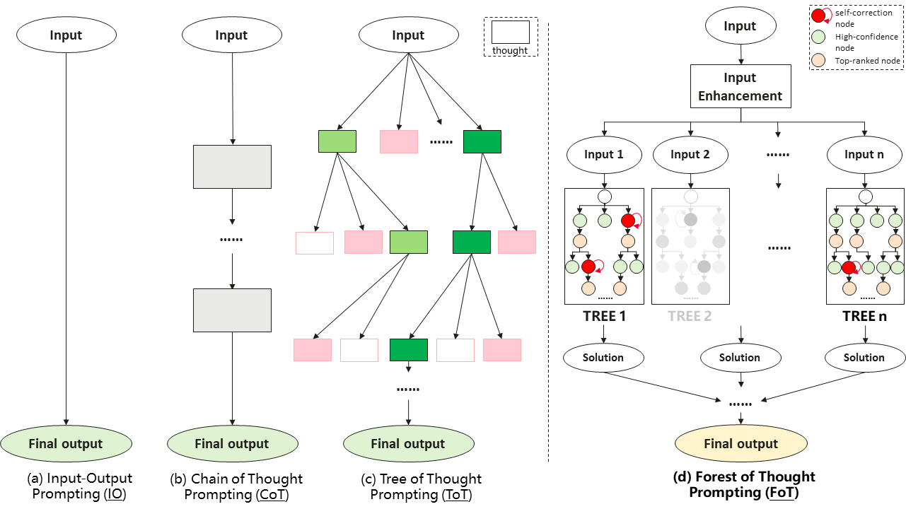

FoT Reference Diagram

Forest-of-Thought (FoT) scales reasoning by running several thought trees, activating promising branches sparsely, correcting weak branches, and using consensus over the forest. In ToricGT the same idea is moved from prompt strings into embedding space: each branch is a graph-valued hidden trajectory, each edge is a graph edit or continuous displacement, and branch rewards are tied to BPB delta, verifier score, topological stability, and toric fan margins.
FoT arXiv:2412.09078 · upstream code · ToricBLM continuation

Each state is s=(G,H,Σ,μ,M): a reasoning graph, hidden table, toric/fan chart, moment coordinate, and memory pointer.
Actions add/merge thought nodes, move inside a normal cone, cross a wall, retrieve an analogy, or flatten a graph output for BPB scoring.
Reward combines byte likelihood improvement with structural diversity, GUDHI persistent-homology stability, and toric/BGG certificate consistency.